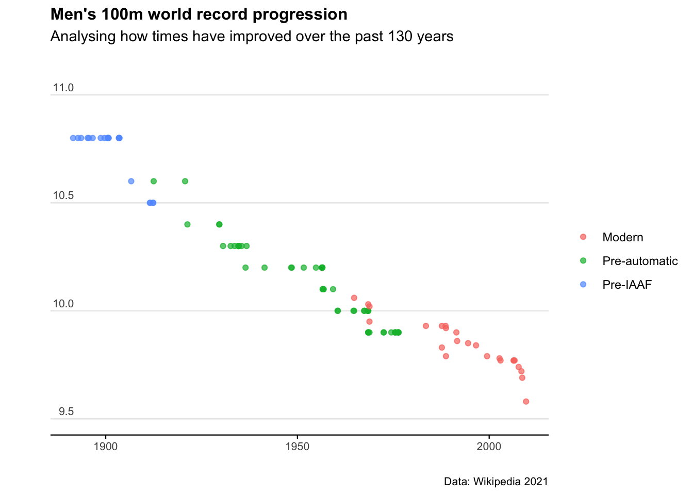

Chapter 10 Web-scraping
10.1 Introduction
Getting content off websites can be a nightmare. The worst case resort is manually typing data from a web-page into spreadsheets… but there are many steps we can do before resorting to that.
This chapter will outline the process for pulling data off the web, and particularly for understanding the exact web-page element we want to extract. The notes and code loosely follow the fabulous tutorial by Grant R. McDermott in his Data Science for Economistsseries.
First up, let’s load some packages.
# Install development version of rvest if necessary
if (numeric_version(packageVersion("rvest")) < numeric_version('0.99.0')) {
remotes::install_github('tidyverse/rvest')
}
# Load and install the packages that we'll be using today
if (!require("pacman")) install.packages("pacman")
pacman::p_load(tidyverse, rvest, lubridate, janitor, data.table, hrbrthemes)
library(ggplot2)
library(dplyr)
library(tidyverse)10.2 Anatomy of a webpage
Let’s introduce some terminology: server side
This describes information being embeded directly in the webpage’s HTML. When dealing with server side webpages, finding the correct CSS (or Xpath) “selectors” becomes the hardest part of the task.
Iterating through dynamic webpages (e.g. “Next page” and “Show More” tabs) is also tricky - but we’ll get there.
Trawling through CSS code on a webpage is a bit of a nightmare - so we’ll use a chrome extension called SelectGadget to help.
The R package that’s going to do the heavy lifting is called rvest and is based on the python package called Beauty Soup.
10.3 Scraping a table
Let’s use this wikipedia page as a starting example. It contains various entries for the men’s 100m running record.
We can start by pulling all the data from the webpage.
m100 <- rvest:: read_html(
"http://en.wikipedia.org/wiki/Men%27s_100_metres_world_record_progression")
m100…and we get a whole heap of mumbo jumbo.
To get the table of ‘Unofficial progression before the IAAF’ we’re going to have to be more specific.
Using the SelectGadget tool we can click around and identify that that specific table is called div+ .wikitable :nth-child(1) in the HTML code.
pre_iaaf <- m100 %>%
html_element("#mw-content-text > div.mw-parser-output > table:nth-child(9)") %>%
html_table()
pre_iaafNiiiiice - now that’s better. Let’s do some quick data cleaning.
pre_iaaf <- pre_iaaf %>%
clean_names() %>%
mutate(date = mdy(date))
pre_iaafLet’s also scrape the data for the more recent running records. That’s the tables called ‘Pre-automatic timing (1912–1976),’ and ‘Modern Era (1977 onwards).’
For the second table:
iaaf_76 <- m100 %>%
html_element("#mw-content-text > div.mw-parser-output > table:nth-child(15)") %>%
rvest::html_table()
iaaf_76 <- iaaf_76 %>%
clean_names() %>%
mutate(date = mdy(date))
iaaf_76And now for the third table:
iaaf <- m100 %>%
html_element("#mw-content-text > div.mw-parser-output > table:nth-child(20)") %>%
html_table() %>%
clean_names() %>%
mutate(date = mdy(date))
iaafHow good. Now let’s bind the rows together to make a master data set.
wr100 <- rbind(
pre_iaaf %>% dplyr::select(time, athlete, nationality, date) %>%
mutate(era = "Pre-IAAF"),
iaaf_76 %>% dplyr::select(time, athlete, nationality, date) %>%
mutate(era = "Pre-automatic"),
iaaf %>% dplyr::select(time, athlete, nationality, date) %>%
mutate(era = "Modern")
)
wr100Excellent. Let’s plot the results.
ggplot(wr100)+
geom_point(aes(x = date, y = time, col = era),alpha=0.7)+
labs(title="Men's 100m world record progression",
subtitle = "Analysing how times have improved over the past 130 years",
caption = "Data: Wikipedia 2021",
x="",
y="") +
theme_minimal()+
scale_y_continuous(limits=c(9.5,11), breaks=c(9.5,10,10.5,11))+
theme(axis.text.y = element_text(vjust = -0.5, margin = ggplot2::margin(l = 20, r = -20)))+
theme(plot.subtitle = element_text(margin=ggplot2::margin(0,0,25,0))) +
theme(legend.title = element_blank())+
theme(plot.title=element_text(face="bold",size=12))+
theme(plot.subtitle=element_text(size=11))+
theme(plot.caption=element_text(size=8))+
theme(axis.text=element_text(size=8))+
theme(panel.grid.minor = element_blank())+
theme(panel.grid.major.x = element_blank()) +
theme(axis.line.x = element_line(colour ="black",size=0.4))+
theme(axis.ticks.x = element_line(colour ="black",size=0.4))